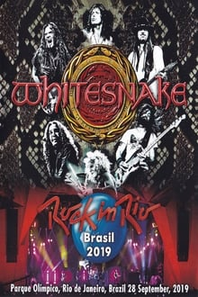
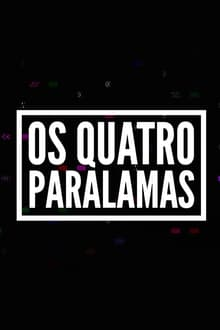

Com cinco décadas de existência, dezessete álbuns de estúdio, onze álbuns ao vivo,
quatorze vídeos e
diversos compactos, a banda veio a ser uma das mais bem sucedidas da história do heavy metal, tendo
vendido mais de 100 milhões de álbuns mundialmente. Assista agora os videos da turne de lançamento
do album senjutsu.
Iron Maiden The Future Past Tour 2023
ESPECIAL ROCK IN RIO

metallica
O show da noite de quinta (19/09/2013) foi uma performance superior à vista no Rock in
Rio 2011, "mais legal do que dois anos atrás", nas palavras de Lars Ulrich. Foi a sexta
passagem do quarteto californiano pelo Brasil.
confira os albuns da banda no spotify e no canal official do youtube:
Aerosmith
Steven Tyler, vocalista da banda, mostrou que mesmo aos 69 anos de idade tem a voz
praticamente intacta e não sofre com as corridas frequentes por todos os lados do palco. O
guitarrista Joe Perry, aos 67, mandou bem nos seus riffs clássicos e improvisações e como
sempre foi parte fundamental das jams do grupo, que alterna muito bem seu setlist. Com uma
quantidade de hits que poderia muito bem arredondar um show inteiro, o Aerosmith prefere
alternar os sucessos como “Crazy”, “Cryin’”, “Dream On” e “Walk This Way” com jams
inspiradíssimas do blues/rock e covers de nomes como Fleetwood Mac e The Beatles, com uma
versão acelerada de “Come Together”. Não há como negar: o primeiro dia da parte “Rock” do
Rock In Rio foi encerrado em grande estilo com uma performance incrível de quem não apenas
sabe o que está fazendo como não se contentou em se escorar nos sucessos.
confira os albuns da banda no spotify e no canal official do youtube:
Slipknot
Se o Rock in Rio tem cara de parque de diversões, o Slipknot é o Castelo do Terror
ideal. O show desta sexta-feira (25) teve o mise-en-scène de horror de sempre - até uma
chuva de papel picado, em momento "Carnapknot". O que faz diferença é que a música não é
de brinquedo - continua boa. A banda de mascarados foi a única a ganhar totalmente a
plateia nesta sexta.
confira os albuns da banda no spotify e no canal official do youtube:
Nightwish
Os finlandeses do Nightwish trouxeram um tom épico na noite de sexta-feira (25) no Rock in
Rio 2015. Banda querida dos brasileiros, graças também ao carisma das cantoras que já
passaram no grupo (Floor Jensen, a atual desde 2013, substituiu Anette Olzon, que havia, por
sua vez, substituído Tarja Turunen), o Nightwish tem o foco mais melódico, com visual gótico
e uma propensão a transformar cada canção em uma fábula. Foi um show que o público fiel
esperava, contando ainda com a participação de Tony Kakko, vocalista da banda Sonata
Arctica..
confira os albuns da banda no spotify e no canal official do youtube:
Evanescense
Os Evanescence voltaram ao Rock in Rio-Lisboa, depois de terem tocado na edição de 2004 e
atuado na do Rio de Janeiro em 2011. Amy Lee e Troy McLawhorn reconhecem que cresceram muito
desde a sua primeira atuação na Belavista e garantem que não perderam o viço. "A nossa
música ainda é muito pesada", salientam:“The Hunter”. Musicas 1) What you want 2) Going
under 3) The other side 4) Weight of the world 5) Made of stone 6) My immortal 7) My heart
is broken 8) Your star 9) Sick 10) The change 11) Sober 12) Imaginary 13) Bring me to my
life
confira os albuns da banda no spotify e no canal official do youtube:
Whitesnake
British hard rock will invade the Sunset Stage. After 34 years, Whitesnake returns to the
festival, this time for the promotion tour of their new album, “Flesh & Blood”. David
Coverdale formed the group in 1978. Since then, the band has topped the charts several times
and received countless awards and nominations. What the public will see in the City of Rock,
September 28, promises to enter the history of Rock in Rio once again. Here “we” go again,
Whitesnake!
confira os albuns da banda no spotify e no canal official do youtube:
Sistem Of a Down
System of a Down at Cidade do Rock, Rio de Janeiro, Brazil on September 24, 2015. Setist:
I-E-A-I-A-I-O / Suite-Pee (Incomplete) / Attack / Prison Song / Know / Aerials / Soldier
Side - Intro / B.Y.O.B. / Soil / Darts / Radio/Video / Hypnotize / Temper / CUBErt / Needles
/ Deer Dance / Bounce / Suggestions / Psycho / Chop Suey! / Lonely Day / Question! / Lost in
Hollywood / Vicinity of Obscenity / Forest / Cigaro / Toxicity (with Chino Moreno) / Sugar
confira os albuns da banda no spotify e no canal official do youtube:
Scorpions
System of a Down at Cidade do Rock, Rio de Janeiro, Brazil on September 24, 2015. Setist:
I-E-A-I-A-I-O / Suite-Pee (Incomplete) / Attack / Prison Song / Know / Aerials / Soldier
Side - Intro / B.Y.O.B. / Soil / Darts / Radio/Video / Hypnotize / Temper / CUBErt / Needles
/ Deer Dance / Bounce / Suggestions / Psycho / Chop Suey! / Lonely Day / Question! / Lost in
Hollywood / Vicinity of Obscenity / Forest / Cigaro / Toxicity (with Chino Moreno) / Sugar
confira os albuns da banda no spotify e no canal official do youtube:
DOCUMENTÁRIOS

Rock in Rio
Artistas que tiveram suas carreiras marcadas pelo Rock in Rio contam como um festival
que parecia fadado ao fracasso se transformou no maior do mundo.
Assista ao documentario completo:
The Dirt
Acompanhe a ascensão meteórica e os tombos homéricos do Mötley Crüe nessa biografia dos
quatro desajustados de Los Angeles que conquistaram o topo do heavy metal.
Assista ao documentario completo:
Metallica - Some Kind Of Moster
O documentário se inicia em 2001, quando o Metallica vai para um estúdio em San Francisco
gravar seu novo álbum. No início das filmagens o baixista Jason Newsted deixa a banda,
após 14 anos. Como a dinâmica entre os demais membros não é das melhores, o empresário
contrata um terapeuta para ajudá-los. Apesar do auxílio profissional, o vocalista James
Hetfield continua se desentendendo com o baterista Lars Ulrich, com Hetfield se
internando numa clínica para tratamento de alcoolismo. Ele volta um ano depois, e só
então o Metallica consegue finalizar o novo álbum.
Assista ao documentario completo::
Os Quatro Paralamas
Dirigido por Roberto Berliner, que acompanha a banda desde o início no Circo Voador, em
1983, este filme sobre música e amizade fala da relação dos três que sobem ao palco
(Herbert, Bi e João), mas também de um quarto elemento, que aparece pouco na mídia, mas
tem papel fundamental: José Fortes, o empresário. Em um papo na sala da casa de Bi
Ribeiro, os quatro lembram a carreira, falam sobre sua amizade inabalável e tocam
músicas que fazem parte dessa trajetória de quase 40 anos.
Assista ao documentario completo:
Keith Richards - Under The Influence
Dirigido pelo premiado cineasta Morgan Neville, o documentário tem a promessa de retratar
o processo criativo de Keith como compõe e seu modo de tocar guitarra. Além disso
contará com entrevistas, material do acervo pessoal e bastidores do novo álbum Crosseyed
Heart .
Assista ao documentario completo:
Queen- The Show Must Go On
A documentary chronicling Queen and Lambert's incredible journey since they first shared
the stage together on "American Idol" in 2009.
Assista ao documentario completo:
O Barato de Iacanga
A história do Festival de Águas Claras, o lendário festival ao ar livre de música
brasileira que, fazendo sucesso entre a década de 1970 e de 1980, ficou conhecido por
muitos como o Woodstock do Brasil. Unindo entrevistas com artistas e fundadores do
evento
Assista ao documentario completo:
FILMES
Bohemian Rhapsody
Freddie Mercury e seus companheiros Brian May, Roger Taylor e John Deacon mudam o mundo
da música para sempre ao formar a banda Queen, durante a década de 1970. Porém, quando o
estilo de vida extravagante de Mercury começa a sair do controle, a banda tem que
enfrentar o desafio de conciliar a fama e o sucesso com suas vidas pessoais cada vez
mais complicadas.
Assista o filme completo:
Metal Lords
O plano dos excluídos Hunter e Kevin está claro: focar no heavy metal, ganhar a Batalha
das Bandas e conquistar a admiração de todos.
Assista o filme completo:
Tim Maia
Cinebiografia do cantor Tim Maia, baseada no livro “Vale Tudo – O Som e a Fúria de Tim
Maia”. O filme percorre cinquenta anos na vida do artista, desde a sua infância no Rio
de Janeiro até a sua morte, aos 55 anos de idade, incluindo a passagem pelos Estados
Unidos, onde o cantor descobre novos estilos musicais e é preso por roubo e posse de
drogas.
Assista o filme completo:
Metallica - A Vóz Suprema Do Blues
Na Chicago de 1927, o clima fica tenso quando a pioneira Mãe do Blues se reúne com a
banda em um estúdio de gravação. Adaptação da peça de August Wilson.
Assista o filme completo:
Ls Bamba
Richard Stephen Valenzuela, mais conhecido como Ritchie Valens, marcou o final dos anos
50 com uma carreira meteórica, recheada de sucessos e pontuada por uma das canções mais
famosas de todos os tempos: "La Bamba".